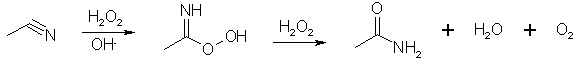

HTML by Rhodium
Isosafrole in acetonitrile + H2O2 in methanol + sodium carbonate (pH 8-10.5), at 10-45�C for 20h gives 94% isosafrole epoxide1. This can be rearranged to MDP2P in about 90% overall yield. Possibly this could also work with straight safrole.
I don't have more info than this, but if I were to perform this reaction, I would try the following procedure:
Radziszewski reaction:
In alkaline solution, H2O2 reduces the intermediate peroxy acid to the amide with the liberation of oxygen, but at pH 8 no oxygen is evolved and the solution of peroxycarboximidic acid can be used to oxidize an olefin to its epoxide2. Too much hydrogen peroxide oxidizes the acetonitrile to acetamide.
A low-cost method for epoxidation of cyclohexene is by dropwise addition of 30% H2O2 and NaOH to a stirred mixture of cyclohexene, methanol, and acetonitrile at 60�C, the yield of cyclohexene oxide is 85%3.
Dimethyldioxirane solution in acetone was made freshly by an improved conventional method5. After the solution was dried with molecular sieves (4 �, activated powder), it was titrated iodometically with KI and starch. The titrated dimethyldioxirane solution (~0.08 M solution in acetone, 1.2 equiv.) was added to trans-anethole or trans-asarone in dry acetone (1 ml for 1 mmol) at 0�C and the reaction mixture was stirred for 30 min at room temperature. The reaction solution was evaporated under reduced pressure to afford the epoxides. trans-anethole oxide was a colorless oil. The yellow oil of trans-asarone oxide after vacuum application was dissolved in dry hexane and recrystallized at �20�C for a few days to produce a white solid product (mp. 37�40�C). The yields of these oxides were >95%. The oxides were kept at �80�C in dry nitrogen. In this condition trans-anethole oxide was stable for 1 year and trans-asarone oxide was stable for 1 month.
trans-anethole oxide and trans-asarone oxide were found to have very pure NMR spectra with little or no impurity peaks. The yields of oxides from this method were >95%, which are much better than those of Mohan and Whalen6 and Greca et al.7 whose methods used m-chloroperoxybenzoic acid to oxidize anethole or asarone and gave yields of 38 and 52%, respectively.
Both of the oxides were stable in acetone or DMSO for 1 h at 0 or 37�C. In aqueous environments, however, the amount of these epoxides declined, presumably because of their hydration to diols. The half-life of trans-anethole oxide was 7.6 min in 0.1 M potassium phosphate buffer (pH 7.4) at 37�C. The presence of 154 mM KCl lowered the half-life to 4.2 min. trans-Asarone oxide showed shorter half-lives; 4.0 min without or 2.4 min with 154 mM KCl.
To a well-stirred biphasic mixture of 2.0 g of trans-anethole in 60 mL of methylene chloride and 60 mL of 10% sodium carbonate in water in an icewater bath was added a solution of 5.6 g of m-chloroperoxybenzoic acid (85%, 0.028 mol) in 60 mL of methylene chloride over a period of 2.5 h by means of a syringe pump assembly. The methylene chloride layer was separated, washed with 10% sodium carbonate solution (3x25 mL) and saturated sodium chloride solution (25 mL), and dried over anhydrous sodium sulfate. Removal of the solvent on a rotary evaporator yielded 1.94 g of oil that was distilled in a short path distillation apparatus (45�C oil bath, 0.1 mmHg) to yield 0.84 g (38%) of trans-Anethole Oxide.